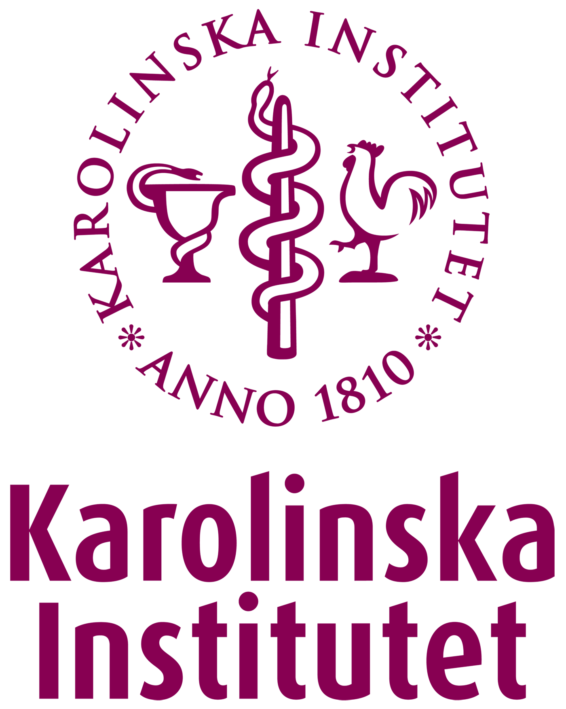

Making OMOP a formal part of the Swedish health data ecosystem
Mobilizing for an increased use of the international data model OMOP, to unlock the potential of Swedish health data through efficient and effective secondary use.


A national initiative
OMOP 4 Sweden! brings together a number of organizations in Swedish life science and healthcare who want to help Sweden build a competitive ability to effectively use our health data assets to generate valuable evidence for better healthcare. We intend to take important steps to create the necessary commitment and improved conditions for increased standardisation of Swedish health data, enabling effective secondary use.
More about OMOP 4 Sweden!About OMOP
OMOP in Sweden
Some of the early adopters in Sweden who either use OMOP, OHDSI, and federated analysis themselves, or support its establishment in the Swedish health data ecosystem.
The Government Offices
Assignment to the National Board of Health and Welfare to investigate the adaptation of health data registries to OMOP standards

Karolinska Institutet - MEB
Implemented OMOP for data on older adults in Sweden
University of Gothenburg / SCIFI-PEARL
Largest and most active OMOP implementation in Sweden
SWIBREG
Swedish Inflammatory Bowel Disease Registry
Uppsala Monitoring Center
Early OMOP adopter in pharmacovigilance
Lund University, Intelligent Systems Laboratory
AI-based decision support for colon cancer care
Want your organisation to join?
If your organisation wants to join the initiative or the growing list of Swedish OMOP users, do not hesitate to reach out.